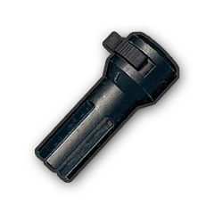
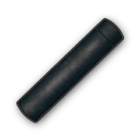
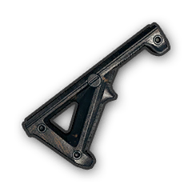
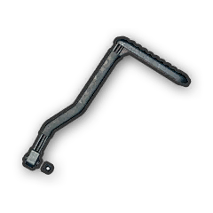

The choke makes the shotgun spread less, making longer shots easier.
Slightly reduces horizontal recoil and reduces vertical recoil.
Reduced recoil, increased accuracy and stability for Sniper Rifles.

Hides the flash effect when the Assult Rifle is fired, and by thus making it far harder to see your precise location.
Hides the flash effect when the Sub Machine Gun is fired, and by thus making it far harder to see your precise location.
Hides the flash effect when the sniper rifle is fired, and by thus making it far harder to see your precise location.
Suppressors are an attachment that packs baffles into a metal tube, causing expanding gas to be absorbed into the baffles, muffling sound from the expanding gases inside the muzzle. This has the result of reducing the "crack" sound of a bullet. While pop culture would have you believe this "silences" the sound, it really only suppresses the sound, and the actual effect of the suppressor is much more important - by muffling the sound and causing the soundwaves to disperse in other directions, it becomes much harder to pinpoint where the shot was fired.
Suppressors are an attachment that packs baffles into a metal tube, causing expanding gas to be absorbed into the baffles, muffling sound from the expanding gases inside the muzzle. This has the result of reducing the "crack" sound of a bullet. While pop culture would have you believe this "silences" the sound, it really only suppresses the sound, and the actual effect of the suppressor is much more important - by muffling the sound and causing the soundwaves to disperse in other directions, it becomes much harder to pinpoint where the shot was fired.

Suppressors are an attachment that packs baffles into a metal tube, causing expanding gas to be absorbed into the baffles, muffling sound from the expanding gases inside the muzzle. This has the result of reducing the "crack" sound of a bullet. While pop culture would have you believe this "silences" the sound, it really only suppresses the sound, and the actual effect of the suppressor is much more important - by muffling the sound and causing the soundwaves to disperse in other directions, it becomes much harder to pinpoint where the shot was fired.
Suppressors are an attachment that packs baffles into a metal tube, causing expanding gas to be absorbed into the baffles, muffling sound from the expanding gases inside the muzzle. This has the result of reducing the "crack" sound of a bullet. While pop culture would have you believe this "silences" the sound, it really only suppresses the sound, and the actual effect of the suppressor is much more important - by muffling the sound and causing the soundwaves to disperse in other directions, it becomes much harder to pinpoint where the shot was fired.
GRIPS

Slightly reduces horizontal/vertical recoil and makes switching to ADS faster.
A Foregrip establishes a hand grip at the far muzzle end of the weapon. This increases stability, reducing the drift of the weapon when fired.
A Foregrip establishes a hand grip at the far muzzle end of the weapon. This increases stability, reducing the drift of the weapon when fired.
STOCKS
Stocks attach to the back end of a weapon, increasing both stability and accuracy.
Stocks attach to the back end of a weapon, increasing both stability and accuracy.

Stocks attach to the back end of a weapon, increasing both stability and accuracy.
MAGAZINES
If attached to an Automatic Rifle, the weapon will have a capacity of 40 bullets instead of 30.
The Extended Mag for Pistol is a custom magazine that joins the extended capacity of the extended magazines and the smaller frame of quickdraw magazines. This means you can carry more ammunition, but also can pull up from the hip much faster.
The Extended Mag for SMG is a custom magazine that joins the extended capacity of the extended magazines and the smaller frame of quickdraw magazines. This means you can carry more ammunition, but also can pull up from the hip much faster.
The Extended Mag for SMG is a custom magazine that joins the extended capacity of the extended magazines and the smaller frame of quickdraw magazines. This means you can carry more ammunition, but also can pull up from the hip much faster.
BULLET LOOPS
More ammunition, faster draw from the side of the KAR98K.
More ammunition, faster draw from the side of the S1897 or S686.
SIGHTS
The Red Dot Sight is a holographic sight that projects a red dot in the center of a glass or acrylic pane. This dot is adjustable, and allows for change over range.
Adds a holographic sight to your weapon.
A sight that offers 2x magnification for your weapon.
The ACOG, also known as the Advanced Combat Optical Gunsight, is a series of telescopic sights. The sight offers magnification levels from 1.5x to 6x, and has an internal phosphor system to provide night-time lighting.
Adds a telescopic sight to your weapon.
The 15x PM II Scope is the game variation of the Schmidt and Bender PMII 5-25x56 scope, which magnifies the vision of the player 15 times from the normal vision.